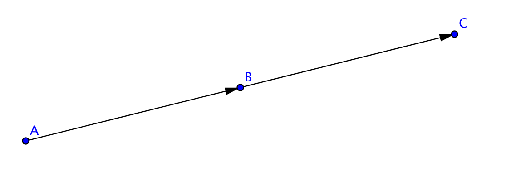
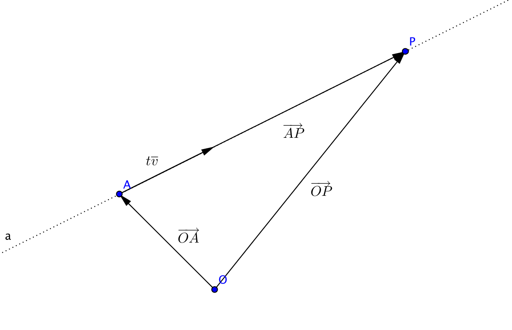

8. Linjen
Ett flygplan startar från punkten \(A=(2,4,0)\) och färdas varje minut enligt vektorn \(\overline{a}=\overline{i}-2\overline+3\overline{k}\). Bestäm koordinaten för flygplanet efter
- 1 minut
- 10 minuter
- \(t\) minuter.
För att en linje skall vara definierad behöver vi antingen två punkter eller en punkt och en vektor. Vektorn kallar vi för riktningsvektor.
Då vi arbetar med två dimensioner, vanligt koordinatsystem, så kan vi bilda ekvationer för linjer genom att utnyttja två punkter eller genom att utnyttja en punkt och en riktingskoefficient genom att tillämpa en formel. Mera om det kommer du att lära dig i följande kurs, MaA 5.
För linjer i tre dimensioner har vi inte en formel som vi kan fylla i utan vi måste arbeta fram ett uttryck.
Exempel 1 Bestäm riktningsvektorn för linjen som representeras av linjen \(y=-\dfrac{3}{2}x-1\).
Lösning
Exempel 2 En linje går genom punkterna \(A=(0,1,2)\) och \(B=(5,6,7)\). Är punkten \(C=(7,8,9)\) på linjen?
Lösning
Idén är följande:

Om A, B, och C ligger på samma linje så kan vi uttrycka \(\overrightarrow{AB}=r\overrightarrow{AC}\) där \(r \in \mathbb R\).
Vi får att
\(\begin{array}{rcl} \overrightarrow{AB} & = & r\overrightarrow{AC} \\ (5-0)\overline{i} + (6-1)\overline{j} + (7-2)\overline{k}& = &r[(7-0)\overline{i} + (8-1)\overline{j} + (9-2)\overline{k}] \\ 5\overline{i} + 5\overline{j} + 5\overline{k} & = &7r\overline{i} + 7r\overline{j} + 7r\overline{k}\\ \end{array}\)
Uppdelning i basen är entydig och vi får att
\(\begin{array}{rcl} 5=7r &\Leftrightarrow & r=\frac{5}{7} \\ \\ 5=7r &\Leftrightarrow & r=\frac{5}{7} \\ \\ 5=7r &\Leftrightarrow & r=\frac{5}{7} \\ \end{array}\)
Eftersom \(r\) får samma värde för alla komponenter så kan vi skriva \(\overrightarrow{AB}=r\overrightarrow{AC}\). Punkterna ligger på samma linje.
Vi tar en linje som definieras av en punkt A och en vektor \(\overline{v}\). En punkt \(P\) är på linjen om och endast om vekorn \(\overrightarrow{AP}\) kan skrivas som \(t\overline{v}\) där \(t\) är ett reellt tal.

Vi kallar formen \(\overrightarrow{OP}=\overrightarrow{OA}+t\overline{v}\) för vektorframställning.
Då vi sätter in i parameterformen för linjen en punkt A och riktningsvektorn \(\overline{v}\) så kan vi lösa ut ett ekvationssystem med tre ekvationer. Dessa kallar vi för parameterform.
Exempel 3 En linje går genom punkten \(A=(0,3,1)\) och har riktningsvektorn \(\overline{v}=\overline{i}+\overline{j}-\overline{k}\). Bestäm linjens ekvation som vektorframställning och i parameterform.
Lösning
För en rät linje i rymden gäller följande.
Vi behöver en punkt \( P_0 =(x_0,y_0 z_0) \) på linjen, riktningsvektorn \( \overline{s} = s_x \overline{i} + s_y \overline{j} + s_z\overline{k} \) och en godtycklig punkt \( P = (x,y,z) \).
Vi kan uttrycka linjens ekvation på följande sätt:
- vektorform: \( \overrightarrow{OP} = \overrightarrow{OP_0} + t\overline{s} \)
- parameterform:
\( \left\{ \begin{array}{l} x = x_0 + ts_x \\ y = y_0 + ts_t \\ z = z_0 + ts_z \\ \end{array} \right. \)
Exempel 4 Linje \(l_1\) går genom punkterna \((3,8,-1)\) och \((5,-12,-3)\). Linjen \(l_2\) går genom punkterna \((-5,4,11)\) och \((-7,-6,15)\). Skär linjerna \(l_1\) och \(l_2\) varandra?
Lösning
Linjerna \(l_1\) och \(l_2\) skär varandra om vi hittar en gemensam punkt på linjerna. Vi kallar denna punkt för \(P\).

Om vi kan bilda \(\overrightarrow{OP}\) två olika sätt så ligger punkten \(P\) på bägge linjer och är deras skärningspunkt.
Först via linje \(l_1\), \(\overrightarrow{OP}=\overrightarrow{OA}+r\overrightarrow{AB}\).
Sedan via linje \(l_2\), \(\overrightarrow{OP}=\overrightarrow{OC}+s\overrightarrow{CD}\).
Linjerna skär varandra om \(\overrightarrow{OA}+r\overrightarrow{AB} = \overrightarrow{OC}+s\overrightarrow{CD}\).
Vi bestämmer vektorerna \(\overrightarrow{AB}\) och \(\overrightarrow{CD}\).
\(\overrightarrow{AB}= (5-3)\overline{i}+(-12-(-8))\overline{j}+(-5-(-1))\overline{k} = 2\overline{i}-4\overline{j}-2\overline{k}\).
\(\overrightarrow{CD}= (-7-(-5))\overline{i}+(6-4)\overline{j}+(15-11)\overline{k} = -2\overline{i}+2\overline{j}+4\overline{k}\).
Sedan löser vi på,
\(\begin{array}{rcl} \overrightarrow{OA}+r\overrightarrow{AB} & = & \overrightarrow{OC}+s\overrightarrow{CD} \\ 3\overline{i}-8\overline{j}-\overline{k} + r[2\overline{i}-4\overline{j}-2\overline{k}] & = & -5\overline{i}+4\overline{j}+11\overline{k}+s[-2\overline{i}+2\overline{j}+4\overline{k}] \\ (3+2r)\overline{i}+(-8-4r)\overline{j}+(-1-2r)\overline{k} & = & (-5-2s)\overline{i}+(4+2s)\overline{j}+(11+4s)\overline{k}\\ \end{array}\)
Uppdelning i bas är entydig och vi får:
\(\left\{ \begin{array}{rcl} 3+2r & = &-5-2s \\ -8-4r & = &4+2s \\ -1-2r & = &11+4s \\ \end{array} \right.\)Om vi får ett \(r\) och \(s\) som satisfierar alla tre ekvationer har vi en skärningspunkt. Första och andra ekvationen ger:
\(\left\{ \begin{array}{rcl} 3+2r & = &-5-2s \\ -8-4r & = &4+2s\\ \end{array} \right.\)
att \(r=-2\) och \(s=-2\). Insättning av värdena i tredje ekvationen ger att \(-1-2(-2)=11+4(-2) \Leftrightarrow 3=3\). (Man kan även lösa direkt alla tre ekvationer på räknare och konstatera att de har en gemensam lösning.)
Det finns en gemensam punkt. Koordinaterna får vi genom att bestämma \(\overrightarrow{OP}\).
\(\overrightarrow{OP}=\overrightarrow{OA}-2\overrightarrow{AB} = 3\overline{i}-8\overline{j}-\overline{k} -2[2\overline{i}-4\overline{j}-2\overline{k}] = -\overline{i}+3\overline{k}\).
\(P\):s koordinater är \((-1,0,3)\).
Alltså skär linjerna varandra.
Uppgifter
Kombinera rätt linje med rätt riktningsvektor
Välj bland följande:
\(y=-x+2\)\(x=1\)\(y=\frac{1}{2}x+1\)\(y=2\)\(y=2x+1\)Linje Riktningsvektor \(2\overline{i}+\overline{j}\) \(\overline{i}-\overline{j}\) \(\overline{i}\) \(\overline{j}\) \(\overline{i}+2\overline{j}\) Linje Riktningsvektor \(y=\frac{1}{2}x+1\) \(2\overline{i}+\overline{j}\) \(y=-x+2\) \(\overline{i}-\overline{j}\) \(y=2\) \(\overline{i}\) \(x=1\) \(\overline{j}\) \(y=2x+1\) \(\overline{i}+2\overline{j}\) - Bestäm en riktningsvektor för följande linjer.
- \( y = 3x-4 \)
Då riktningskoefficenten är 3 rör vi oss 1 steg åt höger och 3 steg uppåt.
En riktningsvektor är \( \overline{s} = \overline{i} + 3\overline{j} \).
En annan är \( \overline{s} = -\overline{i} -3\overline{j} \).
Dessutom har vi multiplar av dessa tex, \( \overline{s} = 2\overline{i} + 6\overline{j} \).
- \( y = -5x - 3 \)
Då riktningskoefficenten är -5 rör vi oss 1 steg åt höger och 5 steg nedåt.
En riktningsvektor är \( \overline{s} = \overline{i} - 5\overline{j} \).
En annan är \( \overline{s} = -\overline{i} +5\overline{j} \).
Dessutom har vi multiplar av dessa tex, \( \overline{s} = 2\overline{i} -10\overline{j} \).
- \( y = -\dfrac{2}{5} x -1 \)
Då riktningskoefficenten är \( -\dfrac{2}{5} \) rör vi oss 5 steg åt höger och 2 steg uppåt.
En riktningsvektor är \( \overline{s} = 5\overline{i} -2\overline{j} \).
En annan är \( \overline{s} = -5\overline{i} +2\overline{j} \).
Dessutom har vi multiplar av dessa tex, \( \overline{s} = 10\overline{i} - 4\overline{j} \).
- \( y = 3x-4 \)
- Bestäm ekvationen för linjen som
- går genom punkten \( (1,3) \) och har riktningsvektorn \( \overline{s} = \overline{i} + 2\overline{j} \).
Linjens ekvation är av typ \( y-y_0 = k (x-x_0) \).
Riktningskoefficienten \( k = \dfrac{2}{1} = 2 \) och punkten är \( (1,3) \).
Linjens ekvation är \( y-3 = 2(x-1) \) som är \( y = 2x+1 \).
- går genom punkten \( (3,-4) \) och har riktningsvektorn \( \overline{s} = 3\overline{i} - 2\overline{j} \).
Linjens ekvation är av typ \( y-y_0 = k (x-x_0) \).
Riktningskoefficienten \( k = \dfrac{-2}{3} \) och punkten är \( (3,-4) \).
Linjens ekvation är \( y-(-4) = -\dfrac{2}{3}(x-3) \) som är \( y = -\dfrac{2}{3}x-2 \).
- går genom punkten \( (-5,0) \) och har riktningsvektorn \( \overline{s} = -5\overline{i} - 9\overline{j} \).
Linjens ekvation är av typ \( y-y_0 = k (x-x_0) \).
Riktningskoefficienten \( k = \dfrac{-9}{-5} = \dfrac{9}{5} \) och punkten är \( (-5,0) \).
Linjens ekvation är \( y-0 = \dfrac{9}{5}(x-(-5)) \) som är \( y = \dfrac{9}{5}x+9 \).
- går genom punkten \( (1,3) \) och har riktningsvektorn \( \overline{s} = \overline{i} + 2\overline{j} \).
- Är punkten \((-7,11,4)\) på linjen som går genom punkterna \((-1,-1,-2)\) och \((-4,5,1)\)?
Om punkterna är på samma linje, kan vi uttrycka \( \overrightarrow{AB} = r\overrightarrow{AC} \) där \( r \in \mathbf{R} \).
Vi namnger punkterna, \( A = (-1,-1,-2) \), \( B = (-4,5,1) \) och \( C = (-7,11,4) \).
Vi bildar vektorerna
\( \overrightarrow{AB} = (-4-(-1))\overline{i} + (5-(-1))\overline{j} + (1-(-2))\overline{k} = -3\overline{i} + 6\overline{j} + 3\overline{k} \).
\( \overrightarrow{AC} = (-7-(-1))\overline{i} + (11-(-1))\overline{j} + (4-(-2))\overline{k} = -6\overline{i} + 12\overline{j} + 6\overline{k} \).
Vi får
\( \begin{array}{rcl} \overrightarrow{AB} & = & r\overrightarrow{AC} \\ -3\overline{i} + 6\overline{j} + 3\overline{k} & = & r(-6\overline{i} + 12\overline{j} + 6\overline{k}) \\ -3\overline{i} + 6\overline{j} + 3\overline{k} & = & -6r\overline{i} + 12r\overline{j} + 6r\overline{k} \\ \end{array} \)
Uppdelningen är entydig.
\( \left\{ \begin{array}{l} -3 = -6r \\ 6 = 12r \\ 3 = 6r \\ \end{array} \right. \)
Eftersom \( r = \dfrac{1}{2} \) i alla ekvationer är punkterna på samma linje.
- Är punkten \((3,4,0)\) på linjen som går genom punkterna \((1,0,3)\) och \((-2,-6,6)\)?
Om punkterna är på samma linje, kan vi uttrycka \( \overrightarrow{AB} = r\overrightarrow{AC} \) där \( r \in \mathbf{R} \).
Vi namnger punkterna, \( A = (1,0,3) \), \( B = (-2,-6,6) \) och \( C = (3,4,0) \).
Vi bildar vektorerna
\( \overrightarrow{AB} = (-2-1)\overline{i} + (-6-0)\overline{j} + (6-3)\overline{k} = -3\overline{i} - 6\overline{j} + 3\overline{k} \).
\( \overrightarrow{AC} = (3-1)\overline{i} + (4-0)\overline{j} + (0-3)\overline{k} = 2\overline{i} + 4\overline{j} -3\overline{k} \).
Vi får
\( \begin{array}{rcl} \overrightarrow{AB} & = & r\overrightarrow{AC} \\ -3\overline{i} - 6\overline{j} + 3\overline{k} & = & r(2\overline{i} + 4\overline{j} - 3\overline{k}) \\ -3\overline{i} - 6\overline{j} + 3\overline{k} & = & 2r\overline{i} + 4r\overline{j} - 3r\overline{k} \\ \end{array} \)
Uppdelningen är entydig.
\( \left\{ \begin{array}{lr} -3 = 2r & \Leftrightarrow r = \dfrac{-3}{2} \\ -6 = 4r & \Leftrightarrow r = \dfrac{-6}{4}\\ 3 = -3r & \Leftrightarrow r = \dfrac{3}{-3} \\ \end{array} \right. \)
Eftersom \( r \) inte har samma värde ligger punkterna inte på samma linje.
- Bestäm som parameterframställning ekvationen för linjen som representeras av punkten \((1,0,-1)\) och riktningsvektorn \(2\overline{i}-3\overline{j}+\overline{k}\).
Vi har en punkt \( P =(1,0,-1) \) och en riktingsvektor \( \overline{s} = 2\overline{i}-3\overline{j}+\overline{k}\).
Vi utnyttjar formeln
\( \left\{ \begin{array}{l} x = x_0 + ts_x \\ y = y_0 + ts_t \\ z = z_0 + ts_z \\ \end{array} \right. \)
Vi får
\(\left\{ \begin{array}{rcl} x & = & 1 + 2t \\ y & = & -3t \\ z & = & -1 + t \quad t \in \mathbb{R}\\ \end{array} \right.\)
- Bestäm som parameterframställning linjen som går genom punkterna \((-2,1,0)\) och \((7,-2,3)\).
Vi behöver en punkt och en riktningsvektor.Vi kan ta någondera av punkterna och skapa två olika riktingsvektorer.
En riktningsvektor är \( \overline{s} = (7-(-2))\overline{i} + (-2-1)\overline{j} + (3-0)\overline{k} = 9\overline{i} -3\overline{j} + 3\overline{k} \).
En annan riktningsvektor är \( \overline{s} = (-2-7)\overline{i} + (1-(-2))\overline{j} + (0-3)\overline{k} = -9\overline{i} +3\overline{j} - 3\overline{k} \).
Punkten är \(P= (-2,1,0)\) eller P= \((7,-2,3)\)
Totalt kan vi beskriva linjens ekvation på 4 st olika sätt.
En lösning är
\(\left\{ \begin{array}{rcl} x & = & -2 + 9t \\ y & = & 1-3t \\ z & = & + 3t \quad t \in \mathbb{R} \\ \end{array} \right.\)
En annan är
\(\left\{ \begin{array}{rcl} x & = & -2 - 9t \\ y & = & 1+3t \\ z & = & -3t \quad t \in \mathbb{R} \\ \end{array} \right.\)
- I vilken punkt skär linjen som går genom \((3,1,-1)\) och \((0,7,5)\) \(xy\)-planet?
Bilda en ekvation för linjen. För vilket värde på \(z\) skär linjen \(xy\)-planet?
Vi behöver en punkt och en riktningsvektor. Beroende på hur vi väljer dem får vi lite olika uträkningar. Däremot är slutsvaret, punkten som vi söker samma.
En riktningsvektor är \( \overline{s} = (3-0)\overline{i} +(1-7)\overline{j}+(-1-5)\overline{k} = 3\overline{i} -6\overline{j}-6\overline{k} \). En punkt på linjen är \( P =(3,1,-1) \).
Linjens ekvation kan se ut som
\(\left\{ \begin{array}{rcl} x & = & 3 +3t \\ y & = & 1-6t \\ z & = & -1 -6t \quad t \in \mathbb{R} \\ \end{array} \right.\)
Då linjen skär \( xy \)-planet är skärningspunkten av typ \( Q = (x,y,0) \). Vi utnyttjar att \( z = 0 \) för att lösa ut \( t \).
Vi får \( t = -\dfrac{1}{6} \).
Vi får de andra koordinaterna genom att sätta in \( t =-\dfrac{1}{6} \) i linjens ekvation.
Om du har riktingsvektorn \( \overline{s} = -3\overline{i} +6\overline{j} +6\overline{k} \) får du värdet \( t =\dfrac{1}{6} \).
Vi får \( x = \dfrac{5}{2} \) och \( y = 2\). Skärningspunkten är \( (2\dfrac{1}{2},2,0) \).
- En laserstråle skjuts från punkten \((0,2,-1)\) i riktning av \( \overline{i}+3\overline{j}-\overline{k} \). En annan laserstråle skjuts från \((-1,5,0)\) i riktningen \(\overline{i}+\overline{j}-\overline{k}\). I vilken punkt träffar laserstrålarna varandra?
Vi löser uppgiften på motsvarande sätt som exempel 4.
Vi betecknar \( A = (0,2,-1) \), \( \overline{a} = \overline{i}+3\overline{j}-\overline{k} \), \( B = (-1,5,0) \) och \( \overline{b} = \overline{i}+\overline{j}-\overline{k} \).
Vi låter punkten \( P =(x,y,z) \) vara skärningspunkten. Sedan undersöker vi om vi kan bilda den på två olika sätt. Som \( \overrightarrow{OP} = \overrightarrow{OA} + r\overline{a} \) och som \( \overrightarrow{OP} = \overrightarrow{OB} + s\overline{b} \).
Vi får \( \overrightarrow{OA} + r\overline{a} = r\overline{i} + (2+3r)\overline{j} + (-1-r)\overline{k} \).
Och \( \overrightarrow{OB} + s\overline{b} = (-1+s)\overline{i} + (5+s)\overline{j} -s\overline{k} \).
Vi får ekvationssystemet
\( \left\{ \begin{array}{rcl} r & = & -1+s \\ 2+3r & = & 5+s \\ -1-r & = & -s \\ \end{array} \right. \)
Vi får lösningarna \( r = 2 \) och \( s = 3 \).
Vi sätter in \( r \) eller \( s \) i motsvrande uttryck och får \( \overrightarrow{OP} = 2\overline{i} + 8\overline{j} -3 \overline{k} \).
Laserstrålarna träffar varandra i punkten \( (2,8,-3) \).
- Ett flygplan startar från \((1,3,0)\) och flyger i riktningen \(\overline{i}-2\overline{j}+\overline{k}\). Linjen \(y=2x-1\) beskriver en väg. Hur många meter ovanför vägen kommer flygplanet att flyga då en ruta motsvarar 100 m?
Ekvationen som beskriver flygplanets färd är
\(\left\{ \begin{array}{rcl} x & = & 1 +t \\ y & = & 3-2t \\ z & = & t \quad t \in \mathbb{R} \\ \end{array} \right.\)
Då vi ser på situationen uppifrån skall flygplanets ekvation ha samma värde som vägens ekvation. Vi behöver inte höjden, \( z \).
Vi får ekvationssystemet
\(\left\{ \begin{array}{rcl} x & = & 1 +t \\ y & = & 3-2t \\ y & = & 2x-1 \\ \end{array} \right.\)
Vi får lösningarna \( x = \dfrac{3}{2} \), \( y = 2 \) och \( t = \dfrac{1}{2} \).
Då \( t = \dfrac{1}{2} \) är flyplanets \(z\)-koordinat \( z=\dfrac{1}{2} \). Eftersom en ruta motsvaras av 100 m är flygplanets höjd 50 m.